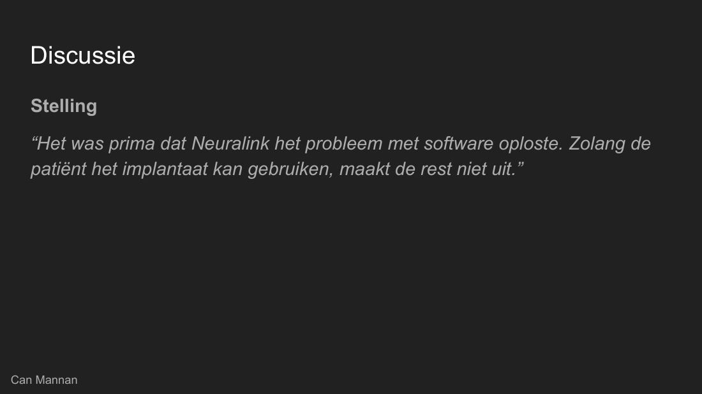

10. Seminar Embedded Augmentation (buiten het project)
Ik was discussiemoderator en leidde het gesprek na twee casussen. Daar leerde ik zelf ook van.
do 29 oktober 2026 (seminar). Voorbereiding en reflectie ingeleverd op 2 november 2026.
Dit hoort niet bij het project
Dit seminar hoort niet bij het project Bio-Reachy. Ik zet het hier omdat het mijn leerproces laat zien.
Waar ging het over?
Het seminar ging over embedded augmentation, dus technologie in of op je lichaam. We werkten in een groep van zes. Twee casussen vormden de basis, namelijk Neuralink (Noland Arbaugh, waarbij de draadjes in zijn hoofd loslieten en het bedrijf het met software oploste) en Second Sight (het bedrijf stopte en ruim 350 mensen bleven achter met een implantaat zonder support). Daarna kwamen er actualiteiten, zoals exoskeletten en insulinepompen.

Mijn rol. Discussiemoderator
Na de casussen leidde ik het gesprek. Mijn taak was het gesprek scherper te maken. Ik gaf richting met concrete vragen en greep in als het stilviel of oppervlakkig werd. Ik vroeg dus niet alleen “wat vinden jullie?”.
Mijn stappen.
- Ik bedacht een kernspanning, namelijk autonomie tegenover afhankelijkheid. Technologie in of op je lichaam maakt je sterker, maar ook afhankelijk van een bedrijf, zijn software en zijn servers.
- Ik bouwde de discussie op in drie niveaus, van klein naar groot, namelijk de gebruiker, de mensen eromheen en de samenleving. Dit is gebaseerd op Kapeller et al. (2020).
- Ik schreef een script van 30 minuten, met een korte kern, een stelling (5 minuten), vier vragen (15 minuten) en een afsluiting (5 minuten).
- Ik maakte noodzinnen voor als het stil zou vallen, te oppervlakkig werd, iemand te veel praatte, het gesprek afdwaalde of de tijd op was.
- Tijdens het seminar leidde ik de discussie met de stelling, vier vragen en een laatste vraag.
Stelling. “Het was prima dat Neuralink het probleem met software oploste. Zolang de patiënt het implantaat kan gebruiken, maakt de rest niet uit.”
Laatste vraag. “Is dit een technisch probleem of een machtsprobleem?”
Wat ging goed
- Bij elke stelling en vraag had de klas iets te zeggen. Het viel nooit stil en mensen kwamen met goede vragen en meningen.
- Mijn teamgenoot Jikke gaf aan dat hij het ook erg goed vond.
- Mijn script gaf me meer zekerheid.
Probleem. Door de spanning kon ik bij mijn reacties niet meteen een bron noemen. De discussie had ook iets korter gekund, en ingrijpen kon beter.
Oplossing. Volgende keer oefen ik de presentatie meer, bereiden we als team vaker samen voor, en schrijf ik bij mijn vaste zinnen een bron op, zodat ik die bij de hand heb.
Wat ik hieruit leer
Bedrijven hebben enorm veel macht over augmentation. Bij Neuralink besloot het bedrijf, niet Noland, om niet opnieuw te opereren, en het probleem werd met software verborgen terwijl de draadjes nog los zaten. Bij Second Sight werkte het implantaat, maar toen het bedrijf stopte, bleven ruim 350 mensen achter zonder support. Het bedrijf heeft de macht, maar de gebruiker draagt de gevolgen. Een telefoon vervang je, een implantaat in je lichaam niet.
Verband met mijn project
Bij Bio-Reachy meet de riem data van een lichaam. De vragen uit het seminar gelden daar ook. Wie bepaalt wat er met die data gebeurt, en wat gebeurt er als het systeem stopt? Dat is een reden dat we mensen vooraf moeten uitleggen wat Reachy meet. Onze bezoekers op het festival noemden data ook als grootste zorg.
Andere opdrachten buiten het project
Er waren in deze sprint nog twee opdrachten die niet bij het project horen, namelijk een opdracht field testing (vr 23 oktober) en een kennisquiz (di 27 oktober). Ik noem ze voor de volledigheid in de tijdlijn.
Bronnen
- Kapeller, A., Felzmann, H., Fosch-Villaronga, E., & Hughes, A.-M. (2020). A taxonomy of ethical, legal and social implications of wearable robots: An expert perspective. Science and Engineering Ethics, 26(6), 3229-3247. https://doi.org/10.1007/s11948-020-00268-4
- Ruder, I. (2024, 16 september). Noland Arbaugh's life as the first Neuralink recipient. New Mobility. https://newmobility.com/noland-arbaughs-life-as-the-first-neuralink-recipient/
- UNESCO. (2025). Recommendation on the ethics of neurotechnology. https://www.unesco.org/en/ethics-neurotech/recommendation
- Pew Research Center. (2022, 17 maart). AI and human enhancement: Americans' openness is tempered by a range of concerns. https://www.pewresearch.org/science/2022/03/17/ai-and-human-enhancement-americans-openness-is-tempered-by-a-range-of-concerns/
- Bloomberg. (2022, 6 december). Elon Musk's Neuralink faces animal welfare probe, Reuters says. https://www.bloomberg.com/news/articles/2022-12-06/elon-musk-s-neuralink-faces-animal-welfare-probe-reuters-says